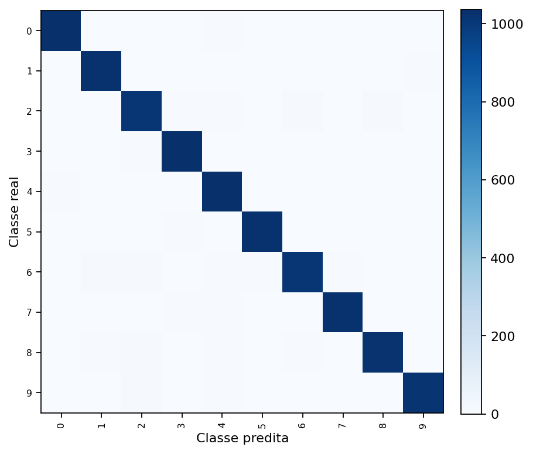
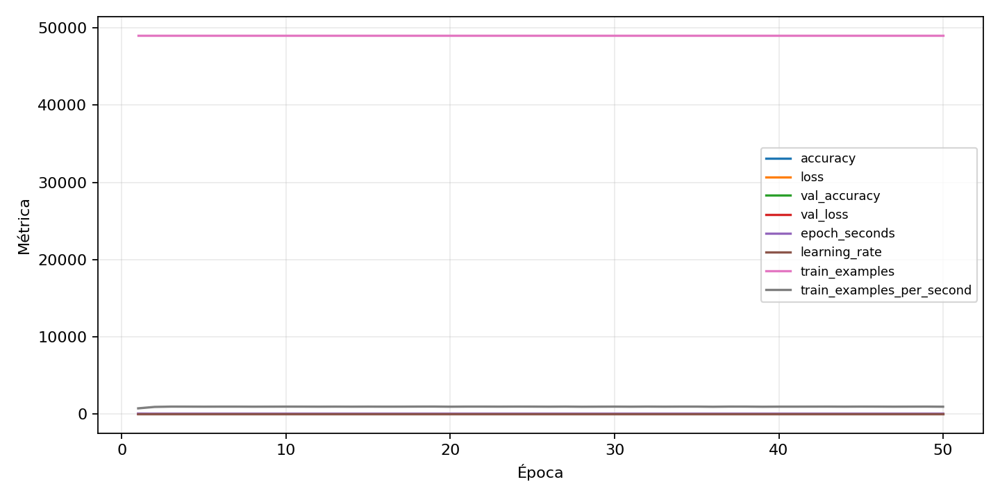

| n_samples | 10500 |
|---|---|
| loss | 0.13859207928180695 |
| accuracy | 0.975047619047619 |
| balanced_accuracy | 0.975047619047619 |
| macro_f1 | 0.9750629037984313 |


| Índice | Classe | Suporte | Precisão | Recall | F1 |
|---|---|---|---|---|---|
| 0 | 0 | 1050 | 0.9856459330143541 | 0.9809523809523809 | 0.9832935560859187 |
| 1 | 1 | 1050 | 0.9734597156398104 | 0.9780952380952381 | 0.975771971496437 |
| 2 | 2 | 1050 | 0.9501411100658513 | 0.9619047619047619 | 0.9559867486985328 |
| 3 | 3 | 1050 | 0.9755409219190969 | 0.9876190476190476 | 0.9815428300993848 |
| 4 | 4 | 1050 | 0.9653233364573571 | 0.9809523809523809 | 0.9730751062824752 |
| 5 | 5 | 1050 | 0.9799809342230696 | 0.979047619047619 | 0.9795140543115769 |
| 6 | 6 | 1050 | 0.9693192713326941 | 0.9628571428571429 | 0.9660774008600096 |
| 7 | 7 | 1050 | 0.9827420901246404 | 0.9761904761904762 | 0.9794553272814143 |
| 8 | 8 | 1050 | 0.9789069990412272 | 0.9723809523809523 | 0.9756330625895844 |
| 9 | 9 | 1050 | 0.9902818270165209 | 0.9704761904761905 | 0.9802789802789802 |
{"adapter":"kmnist","balance_mode":"all_raw","class_names":["0","1","2","3","4","5","6","7","8","9"],"dataset":"kmnist","dataset_options":{},"dataset_root":"/home/msduda/datasets-tcc/kmnist","native_channels":1,"normalization":"unit_interval","num_classes":10,"protocol":{"checkpoint_monitor":"val_macro_f1","dtype_policy":"mixed_float16","early_stopping":{"patience":50,"restore_best_weights":true},"evaluation_augmentation":false,"input_channels":"native","optimizer":"Adam","pretrained_weights":false,"reduce_lr_on_plateau":{"factor":0.3,"min_lr":1e-07,"patience":50},"resize":"proportional_padding","test_time_augmentation":false,"training_from_scratch":true},"seed":42,"source_fingerprint":"8928d478d8d23938a73b4f4a92c407bf3d74beff1e0e67e3644d6ecdc30cf828","source_manifest":{"class_names":["0","1","2","3","4","5","6","7","8","9"],"joined_samples":70000,"metadata":{"layout":"kmnist-component-npz"},"name":"kmnist","native_channels":1,"source_path":"/home/msduda/datasets-tcc/kmnist","splits":{"test":10000,"train":60000},"target_size":64},"target_size":64,"test_fraction":0.15,"train_fraction":0.7,"training":{"augmentation":{"brightness_delta":0.0,"contrast_lower":1.0,"contrast_upper":1.0,"cutout_max_frac":0.0,"cutout_prob":0.0,"flip_lr":false,"noise_std":0.0,"translate_frac":0.0,"zoom_max":1.0,"zoom_min":1.0},"batch_size":416,"default_image_size":64,"dtype_policy":"mixed_float16","early_stopping_patience":50,"extra_fraction":0.0,"image_size_overrides":{"gtsrb":128},"keras_verbose":1,"learning_rate":0.0003,"max_epochs":50,"preprocess_cache_max_mib":0,"reduce_lr_factor":0.3,"reduce_lr_min_lr":1e-07,"reduce_lr_patience":50,"shuffle_buffer_max_mib":0},"validation_fraction":0.15}
{"epochs_completed":50,"epochs_recorded":50,"evaluation_seconds":18.480555184003606,"fit_seconds_current_attempt":3047.647062903001,"max_epoch_seconds":65.82659209700068,"max_epochs":50,"mean_epoch_seconds":51.09888508815973,"mean_train_examples_per_second":960.2499543855796,"median_train_examples_per_second":966.3636541795456,"min_epoch_seconds":50.231838747997244,"selected_checkpoint":"/mnt/e/tcc-benchmark/outputs/kmnist-alldata-noaug-batch-sweep-2026-08-06/batch-416/kmnist/runs/kmnist__unit_interval__all_raw__seed-42/checkpoints/best.keras","total_seconds":2554.9442544079866,"training_seconds":2554.9442544079866,"wall_seconds_current_attempt":3069.7572965740037}
{"elapsed_seconds":3069.8043831759933,"event_counts":{"data_preparation_end":1,"data_preparation_start":1,"epoch_end":50,"evaluation_end":1,"evaluation_start":1,"fit_end":1,"fit_start":1,"periodic":605,"run_completed":1,"train_start":1},"generated_at":"2026-08-08T05:56:22.874+00:00","gpu_backend":"pynvml","interval_seconds":5.0,"metrics":{"cpu_percent":{"count":663,"max":25.0,"mean":13.078280542986425,"min":0.0,"p50":13.3,"p95":16.3},"disk_data_free_bytes":{"count":663,"max":998270967808.0,"mean":998270906540.9834,"min":998270898176.0,"p50":998270906368.0,"p95":998270906368.0},"disk_data_percent":{"count":663,"max":2.7,"mean":2.7,"min":2.7,"p50":2.7,"p95":2.7},"disk_data_total_bytes":{"count":663,"max":1081101176832.0,"mean":1081101176832.0,"min":1081101176832.0,"p50":1081101176832.0,"p95":1081101176832.0},"disk_data_used_bytes":{"count":663,"max":27837923328.0,"mean":27837914963.01659,"min":27837853696.0,"p50":27837915136.0,"p95":27837915136.0},"disk_output_free_bytes":{"count":663,"max":207104094208.0,"mean":207091216674.36502,"min":207090233344.0,"p50":207091081216.0,"p95":207091326976.0},"disk_output_percent":{"count":663,"max":79.3,"mean":79.3,"min":79.3,"p50":79.3,"p95":79.3},"disk_output_total_bytes":{"count":663,"max":1000186310656.0,"mean":1000186310656.0,"min":1000186310656.0,"p50":1000186310656.0,"p95":1000186310656.0},"disk_output_used_bytes":{"count":663,"max":793096077312.0,"mean":793095093981.635,"min":793082216448.0,"p50":793095229440.0,"p95":793095991296.0},"elapsed_seconds":{"count":663,"max":3069.748872,"mean":1538.0091704856711,"min":0.029484,"p50":1535.852024,"p95":2929.0354718},"gpu_count":{"count":663,"max":1.0,"mean":1.0,"min":1.0,"p50":1.0,"p95":1.0},"gpu_memory_percent":{"count":663,"max":45.83325386047363,"mean":45.566391189713286,"min":37.856149673461914,"p50":45.74909210205078,"p95":45.74909210205078},"gpu_memory_total_bytes":{"count":663,"max":8589934592.0,"mean":8589934592.0,"min":8589934592.0,"p50":8589934592.0,"p95":8589934592.0},"gpu_memory_used_bytes":{"count":663,"max":3937046528.0,"mean":3914123199.131222,"min":3251818496.0,"p50":3929817088.0,"p95":3929817088.0},"gpu_temperature_c":{"count":663,"max":52.0,"mean":42.3499245852187,"min":38.0,"p50":42.0,"p95":50.0},"gpu_utilization_percent":{"count":663,"max":100.0,"mean":21.283559577677224,"min":1.0,"p50":9.0,"p95":62.89999999999998},"process_cpu_percent":{"count":663,"max":213.7,"mean":171.58325791855202,"min":0.0,"p50":177.3,"p95":210.9},"process_read_bytes":{"count":663,"max":11104256.0,"mean":11075287.457013575,"min":7933952.0,"p50":11104256.0,"p95":11104256.0},"process_rss_bytes":{"count":663,"max":3968585728.0,"mean":3735554916.0060334,"min":1029894144.0,"p50":3855171584.0,"p95":3930568294.4},"process_vms_bytes":{"count":663,"max":48665665536.0,"mean":48299526147.08899,"min":39580270592.0,"p50":48447975424.0,"p95":48582974668.8},"process_write_bytes":{"count":663,"max":1146880.0,"mean":1132306.1478129714,"min":4096.0,"p50":1146880.0,"p95":1146880.0},"ram_available_bytes":{"count":663,"max":15524274176.0,"mean":12994569427.595778,"min":12765802496.0,"p50":12875001856.0,"p95":13559738368.0},"ram_percent":{"count":663,"max":23.2,"mean":21.80889894419306,"min":6.6,"p50":22.5,"p95":23.0},"ram_total_bytes":{"count":663,"max":16619085824.0,"mean":16619085824.0,"min":16619085824.0,"p50":16619085824.0,"p95":16619085824.0},"ram_used_bytes":{"count":663,"max":3853283328.0,"mean":3624516396.4042234,"min":1094811648.0,"p50":3744083968.0,"p95":3817859481.6}},"sample_count":663,"schema_version":1}